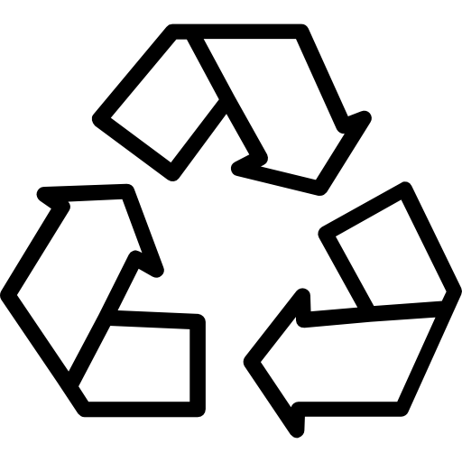

Guarapari
Endereço: Rua Alencar Moraes de Resende, nº 100 - Jardim Boa Vista 29.217-900 - Guarapari - ES
Telefone: (27) 3361-8200
Horário: Segunda à Sexta de 08h30 às 17h30

Endereço: Rua Alencar Moraes de Resende, nº 100 - Jardim Boa Vista 29.217-900 - Guarapari - ES
Telefone: (27) 3361-8200
Horário: Segunda à Sexta de 08h30 às 17h30